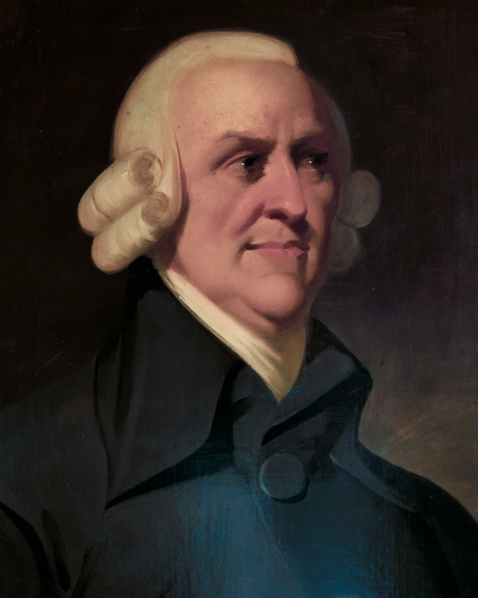

경제 명언과 사상 — 거장들의 한마디Economic Quotes and Ideas — Words from the Masters
- 경제학자의 말은 세상이 돌아가는 원리를, 투자자의 말은 사람의 마음을 다스리는 법을 알려 줍니다.Economists' words explain how the world works; investors' words teach how to manage our minds.
- 명언은 출처가 확실한 것만 골랐고, 원문을 쉬운 우리말로 풀었습니다.Only quotes with clear sources were chosen and explained in plain Korean.
- 공통된 가르침: 욕심과 두려움을 조심하고, 길게 보고, 아는 것에 투자하라.The shared lesson: beware greed and fear, think long term, and invest in what you know.
저는 조율을 배울 때 스승님의 한마디를 오래 기억했습니다. "기계가 아니라 귀가 마지막이다." 경제와 투자에도 오래 남는 말들이 있습니다. 출처가 확인된 말 위주로 골라 쉽게 풀어 봅니다.
When I learned tuning, I long remembered my teacher's words: "The ear, not the machine, has the final say." Economics and investing also have lasting words. I chose mainly quotes with confirmed sources and explain them simply.1. 애덤 스미스 — 정육점 주인의 이기심
1. Adam Smith — the butcher's self-interest
"우리가 저녁 식사를 기대하는 것은 정육점 주인, 양조장 주인, 빵집 주인의 자비심 덕분이 아니라, 그들이 자기 이익을 챙기기 때문이다." — 『국부론』(1776)"It is not from the benevolence of the butcher, the brewer, or the baker that we expect our dinner, but from their regard to their own interest." — The Wealth of Nations (1776)
풀이: 각자 자기 일을 열심히 해서 돈을 벌려는 마음이 시장을 통해 서로를 돕는 결과를 낳는다는 뜻입니다. 저도 생계를 위해 조율하지만, 그 결과 손님의 피아노가 좋은 소리를 냅니다.Meaning: people working hard for their own income end up helping each other through the market. I tune for a living, and as a result customers' pianos sound good.
2. 케인스 — 장기적으로 우리는 모두 죽는다
2. Keynes — in the long run we are all dead
"장기적으로 우리는 모두 죽는다." — 『화폐개혁론』(1923)"In the long run we are all dead." — A Tract on Monetary Reform (1923)
풀이: "길게 보면 저절로 회복된다"는 말만 믿고 지금의 고통을 내버려 두면 안 된다는 뜻입니다. 경제 정책은 지금 사람들의 삶을 돌봐야 한다는 케인스의 생각이 담겨 있습니다.Meaning: we should not ignore today's pain just because "things recover in the long run." It reflects Keynes's view that policy must care for people's lives now.
3. 하이에크 — 『노예의 길』
3. Hayek — The Road to Serfdom오스트리아 출신 경제학자 프리드리히 하이에크는 1944년 『노예의 길』에서 정부가 경제를 모두 계획하려 하면 개인의 자유가 줄어든다고 경고했습니다. 그는 시장 가격이 수많은 사람의 흩어진 지식을 모아 주는 신호라고 보았습니다. 1974년 노벨 경제학상을 받았습니다.Austrian economist Friedrich Hayek warned in The Road to Serfdom (1944) that when government tries to plan the whole economy, individual freedom shrinks. He saw market prices as signals gathering scattered knowledge. He won the Nobel Prize in Economics in 1974.
4. 밀턴 프리드먼 — 인플레이션과 공짜 점심
4. Milton Friedman — inflation and the free lunch"인플레이션은 언제 어디서나 화폐적 현상이다." — 1960~70년대 저술과 강연"Inflation is always and everywhere a monetary phenomenon." — writings and lectures, 1960s–70s
풀이: 물가가 계속 오르는 근본 원인은 물건에 비해 돈이 너무 많이 늘어나는 데 있다는 뜻입니다. 또 그는 1975년 책 제목 『공짜 점심 같은 것은 없다』로 "무엇이든 누군가는 비용을 치른다"는 말을 널리 알렸습니다.Meaning: persistent inflation comes from money growing much faster than goods. He also popularized "There's no such thing as a free lunch" with a 1975 book title: someone always pays the cost.
5. 벤저민 그레이엄 — 미스터 마켓
5. Benjamin Graham — Mr. Market그레이엄은 『현명한 투자자』(1949)에서 시장을 매일 찾아와 터무니없는 값을 부르는 변덕쟁이 동업자 '미스터 마켓'에 비유했습니다. 그의 기분에 휘둘리지 말고, 값이 터무니없이 쌀 때만 이용하라는 가르침입니다. 버핏은 스승 그레이엄의 말로 "시장은 단기적으로는 투표 기계, 장기적으로는 저울"이라는 표현을 소개했습니다.In The Intelligent Investor (1949), Graham compared the market to "Mr. Market," a moody partner who offers silly prices every day. Don't follow his moods; use him only when prices are unreasonably low. Buffett shared his teacher's idea that the market is a voting machine in the short run and a weighing machine in the long run.
6. 워런 버핏 — 공포와 탐욕, 가격과 가치
6. Warren Buffett — fear and greed, price and value"남들이 탐욕스러울 때 두려워하고, 남들이 두려워할 때 탐욕스러워져라." — 버크셔 해서웨이 주주 서한(1986)"Be fearful when others are greedy and greedy when others are fearful." — Berkshire Hathaway shareholder letter (1986)
"가격은 당신이 내는 것이고, 가치는 당신이 얻는 것이다." — 버크셔 해서웨이 주주 서한(2008)"Price is what you pay; value is what you get." — Berkshire Hathaway shareholder letter (2008)
7. 존 템플턴과 피터 린치
7. John Templeton and Peter Lynch"강세장은 비관 속에서 태어나 회의 속에서 자라고, 낙관 속에서 무르익어 행복감 속에서 죽는다." — 존 템플턴"Bull markets are born on pessimism, grow on skepticism, mature on optimism, and die on euphoria." — John Templeton
"무엇을 가지고 있는지 알고, 왜 가지고 있는지 알라." — 피터 린치"Know what you own, and know why you own it." — Peter Lynch
8. 앙드레 코스톨라니 — 산책하는 개
8. André Kostolany — the dog on a walk헝가리 출신 투자자 코스톨라니는 경제와 주가를 주인과 산책하는 개에 비유했습니다. 개(주가)는 앞서 뛰었다 뒤처졌다 하지만 결국 주인(경제)을 따라 같은 길을 간다는 것입니다. 단기 주가에 일희일비하지 말고 경제의 큰 흐름을 보라는 뜻입니다.Hungarian-born investor André Kostolany compared the economy and stock prices to a man walking his dog. The dog (prices) runs ahead and falls behind, but follows the owner (the economy) along the same path. Don't react to every short-term move; watch the big trend.
9. 조율사의 정리
9. A tuner's summary거장들의 말을 모아 보면 결국 같은 이야기입니다. 욕심과 두려움에 휩쓸리지 말고, 내가 아는 것에, 길게, 정직하게. 피아노 조율도 서두르지 않고 귀를 믿고 한 줄씩 맞출 때 가장 좋은 소리가 납니다.Put together, the masters say the same thing: don't be swept by greed and fear; invest in what you know, for the long term, honestly. Piano tuning also sounds best when I don't rush, trust my ear, and tune one string at a time.
📘 오늘의 영어 단어
📘 Today's English words| 영어 | 발음 | 뜻 |
|---|---|---|
| quote | 쿼트 | 인용, 명언 |
| benevolence | 버네벌런스 | 자비심 |
| self-interest | 셀프 인터레스트 | 자기 이익 |
| in the long run | 인 더 롱 런 | 장기적으로 |
| fearful | 피어풀 | 두려워하는 |
| greedy | 그리디 | 탐욕스러운 |
| value | 밸류 | 가치 |
| pessimism | 페시미즘 | 비관 |
| optimism | 옵티미즘 | 낙관 |
| euphoria | 유포리아 | 행복감, 도취 |
쉬운 예문
- Be fearful when others are greedy.
남들이 탐욕스러울 때 두려워하라. - Price is what you pay; value is what you get.
가격은 내는 것이고, 가치는 얻는 것이다. - Know what you own, and know why you own it.
무엇을 가졌는지, 왜 가졌는지 알라.
🔊 버튼을 누르면 브라우저에 들어 있는 음성으로 영어를 읽어 줍니다(기기에 따라 안 될 수 있어요).
자주 묻는 질문
Frequently asked questions인터넷에 도는 명언은 다 진짜인가요?Are all quotes on the internet real?
아닙니다. 유명인의 말로 잘못 알려진 말이 많습니다. 이 페이지는 책, 주주 서한 등 출처가 알려진 말 위주로 골랐습니다.No. Many are wrongly attributed to famous people. This page chose mainly quotes with known sources such as books and shareholder letters.
버핏의 주주 서한은 어디서 읽나요?Where can I read Buffett's letters?
버크셔 해서웨이 홈페이지에 1977년부터의 서한이 영어로 공개되어 있습니다. 영어 공부 겸 읽기 좋습니다.Berkshire Hathaway's website has his letters since 1977 in English. They are great for English study too.
명언대로 하면 돈을 벌 수 있나요?Will following the quotes make me money?
명언은 마음가짐을 알려 줄 뿐 수익을 보장하지 않습니다. 공부와 경험을 함께 쌓아야 합니다.Quotes teach mindset but do not guarantee returns. Build knowledge and experience together.
※ 이 글은 투자 권유가 아닌 공부 자료입니다.※ This page is study material, not investment advice. 숫자와 연도는 널리 알려진 역사 자료를 바탕으로 쉽게 정리했으며, 실제 투자 판단은 본인 책임입니다. 사진 출처: Adam Smith The Muir portrait (cropped 2).jpg (퍼블릭 도메인) · Keynes 1933.jpg (퍼블릭 도메인). 그림과 움직이는 그림은 직접 만들었습니다. · 📞 010-8756-8740
.jpg){kind=link}